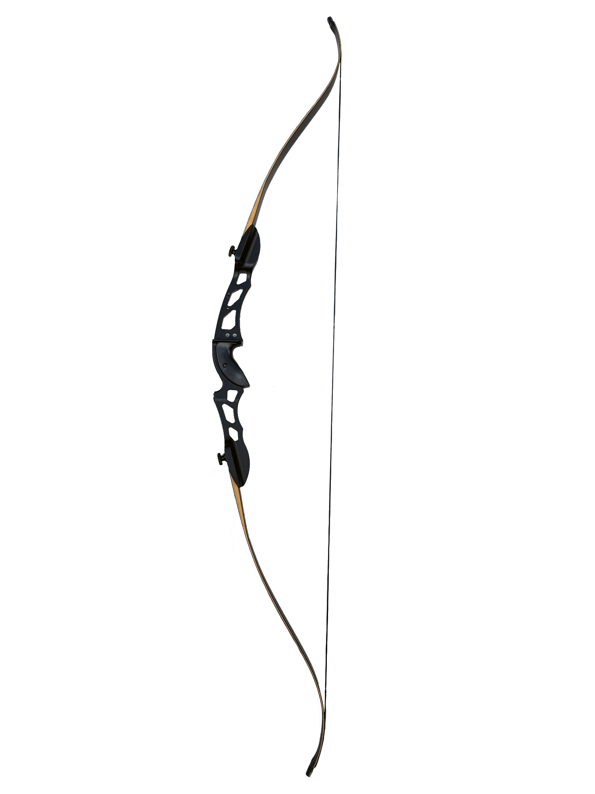
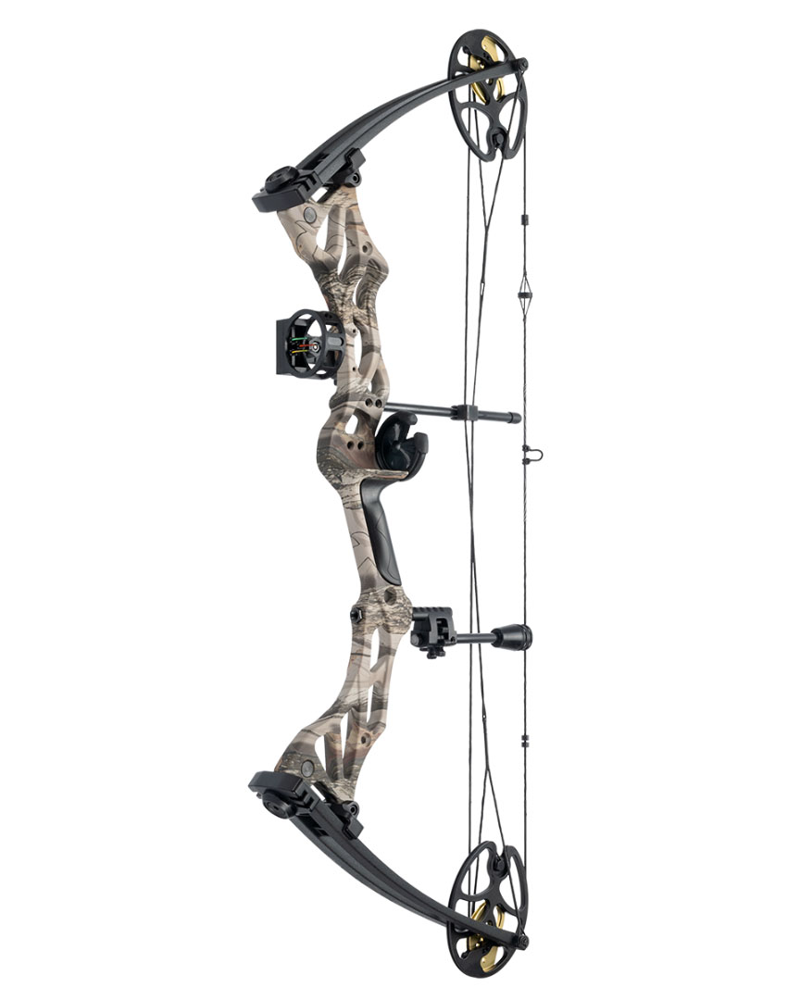
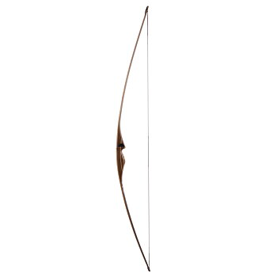
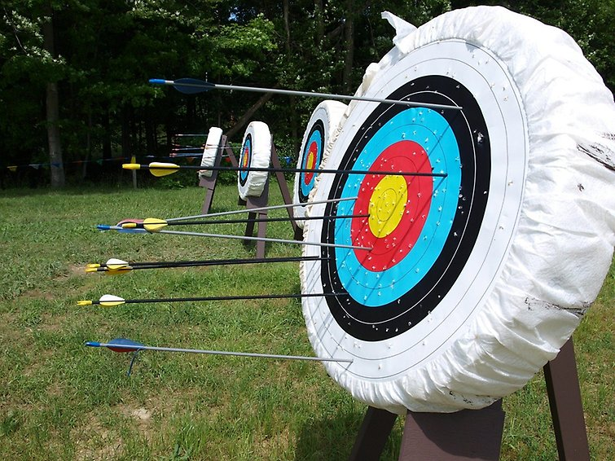

Bågskytte är en av de äldsta formerna av vapenteknik och har använts i tusentals år för jakt och krigföring. Redan under antiken användes pil och båge av civilisationer som egyptierna, grekerna och romarna. Med tiden utvecklades bågskyttet från en överlevnadsteknik till en sport och tävlingsform.
Den vanligaste bågen i olympiska sammanhang. Den har böjda lemmar som ger extra kraft och precision.
En modern båge med ett system av remskivor som gör den mer kraftfull och stabil, vilket ger högre precision.
En traditionell båge med lång historia, särskilt känd från medeltida strider. Den har en enkel design och kräver mycket styrka och skicklighet att använda.
 